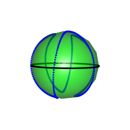
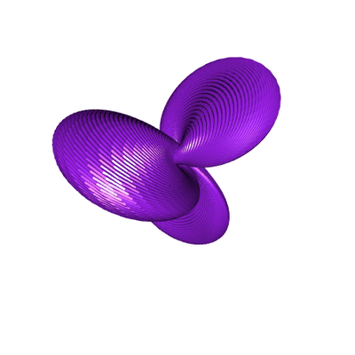
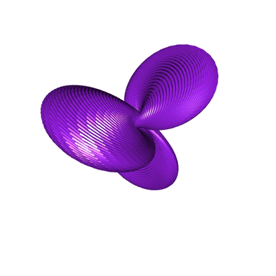

Hopf Torus (3/3): the sinusoidal case
Posted on May 1, 2018
by Stéphane Laurent
In this first and last part of our articles about Hopf tori, we will take a sinusoidal curve on \(S^2\).
hopfinverse <- function(q, t){
1/sqrt(2*(1+q[3])) * c(q[1]*cos(t)+q[2]*sin(t),
sin(t)*(1+q[3]),
cos(t)*(1+q[3]),
q[1]*sin(t)-q[2]*cos(t))
}
stereog <- function(x){
c(x[1], x[2], x[3])/(1-x[4])
}In order to draw a sinusoidal curve on the sphere, I used this equation, that I found on mathcurve.com:
\[ \begin{equation} x = \frac{\cos u}{\sqrt{1+k^2\cos^2(nu)}} \\ y = \frac{\sin u}{\sqrt{1+k^2\cos^2(nu)}} \\ z = \frac{k \cos(nu)}{\sqrt{1+k^2\cos^2(nu)}} \end{equation} \]
plotSphereWithSinusCurve <- function(){
plotSphereEquator()
view3d(0,90)
u_ <- seq(-pi, pi, len=1000)
k <- 3
for(i in 1:length(theta_)){
u <- u_[i]
den <- sqrt(1+k^2*cos(3*u)^2)
x <- cos(u)/den
y <- sin(u)/den
z <- k*cos(3*u)/den
points3d(x,y,z, color="blue")
}
}
open3d(windowRect=c(50,50,500,500))
view3d(0,90)
t_ <- seq(0, 2*pi, len=200)
k <- 3
u <- seq(0, 2*pi , len=300)
for(i in 1:length(u_)){
u <- u_[i]
den <- sqrt(1+k^2*cos(3*u)^2)
x <- cos(u)/den
y <- sin(u)/den
z <- k*cos(3*u)/den
circle4d <- sapply(t_, function(t){
hopfinverse(c(x,y,z),t)
})
circle3d <- t(apply(circle4d, 2, stereog))
shade3d(cylinder3d(circle3d, radius=0.1), color="purple")
}This time, we obtain a Hopf torus with three lobes (because we took \(n=3\) in the formula above).
 

Below is an interactive rendering with three.js. Go to this post if you want to know how I’ve drawn the circles.